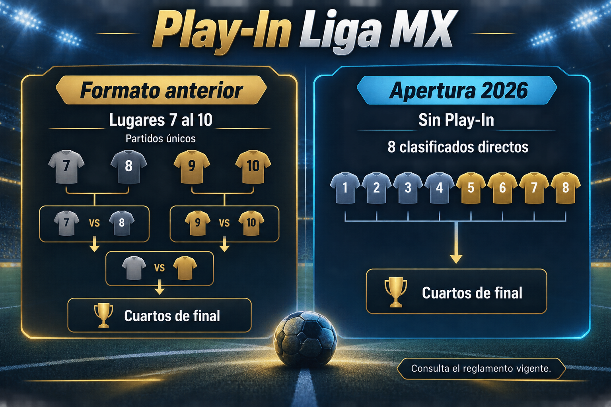

Cómo se clasifica hoy a la Liguilla
En el Apertura 2026 la fase regular conserva 17 jornadas, pero al terminar los primeros ocho clubes de la tabla general entran directamente a cuartos de final. El noveno y el décimo ya no cuentan con una ronda posterior para disputar el acceso.
Para seguir la clasificación actual, consulta la tabla general, los resultados confirmados y la guía de la Liguilla Liga MX 2026.
Cómo funcionaba el Play-In anterior
- El séptimo enfrentaba al octavo; el ganador avanzaba.
- El noveno jugaba contra el décimo; el perdedor quedaba eliminado.
- El perdedor del primer duelo recibía al ganador del segundo para repartir el último boleto.
Los encuentros eran a partido único. Si había empate al final del tiempo reglamentario, se definían en tiros penales. De este modo se completaba una Liguilla de ocho equipos: seis clasificados directos y dos procedentes del Play-In.
Qué cambia con el formato actual
La posición en la tabla general es ahora la vía directa hacia la fase final. Los resultados de cada jornada pueden mover esa frontera, sin necesidad de una ronda posterior.
Las reglas antiguas siguen siendo útiles para explicar temporadas previas, pero no deben trasladarse a la programación actual. Distingue siempre el torneo que estás consultando.
Play-In Liga MX y repechaje: no son el mismo formato
El Play-In fue una fase previa específica; el repechaje de Liga MX tiene contexto histórico propio. Verifica las reglas de cada temporada antes de equipararlos.